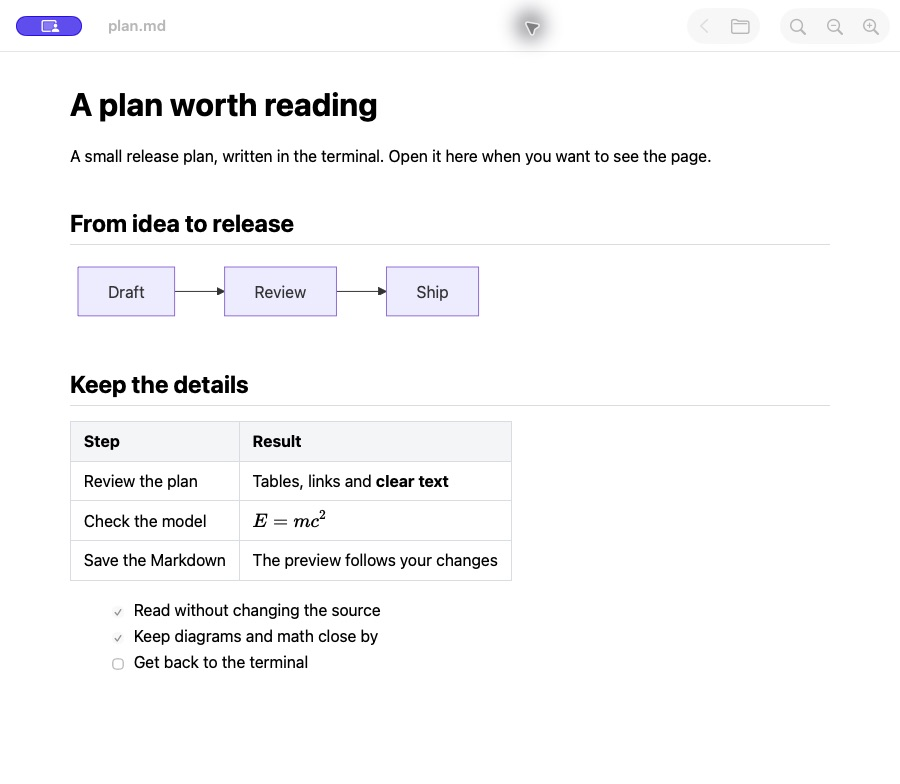

A page, not an editing session.
Headings, tables, code blocks and task lists, with Find, Copy and text zoom. Your Markdown stays untouched.
A READING WINDOW FOR YOUR TERMINAL WORKFLOW
Plans, specs and notes deserve a readable page. Open Markdown in a dedicated macOS window, without bringing an IDE workspace along.
Get LeaflitFree & open source · Apple Silicon · macOS 14+
~/project $
leaflit ./plan.mdA file to read.
A window to read it in.

01 / THE REASON
“I wanted to open Markdown from my LLM terminal workflow without loading an IDE just to read it.”
That’s why I built Leaflit. The terminal is where the work happens. A rendered page is where a long plan, a table or a diagram becomes easier to review.
Leaflit gives that step its own window. Open the file, read the page, and return to the terminal when you’re ready.
02 / THE READING PART
One reader for the Markdown you already have.
Headings, tables, code blocks and task lists, with Find, Copy and text zoom. Your Markdown stays untouched.
Mermaid, KaTeX and fonts are bundled with the app. Rendering does not depend on a CDN. Local PNG and JPEG images stay local.
Saved changes refresh the page, including replacement saves. Follow relative document links, then use Back to return.
03 / BACK TO YOUR WORK
Install the app and its command with the personal Homebrew tap. Then open any local Markdown file.
0.1.0 preview · Developer ID signed and notarized
Apple Silicon · macOS 14 or later
Verified on Apple M3 with macOS 26.6.2. Earlier supported macOS versions remain unverified.
brew install --cask magicsih/tap/leaflitleaflit ./plan.mdNo account. No analytics SDK in the app. No changes to your default file association.
It means a dedicated reader with no editing workspace to configure. It is a product goal, not a promise that Leaflit uses less memory than every editor. The app uses WKWebView and its helper processes. The local 0.2.0 sidebar candidate, measured before the icon update, used about 70–72MiB for 1KiB prose and 151–162MiB for a heading-heavy 100KiB benchmark, depending on sidebar state. The original 60MiB target was not met.
See the measured ranges, methods and limits. Spoken VoiceOver, earlier macOS, actual Finder drops and network-isolated host execution have remaining verification work in GitHub issues.